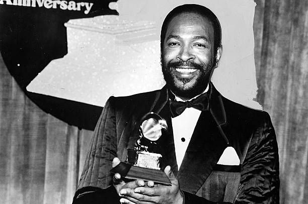
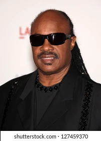
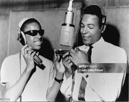
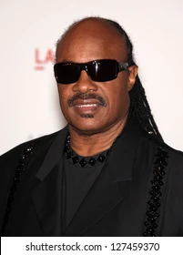
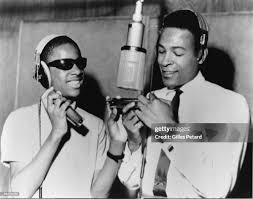

Rhythm and Blues: Where Soul Meets Groove
RnB
**Rhythm and blues , emerging from African American communities in the 1940s, is a genre steeped in rich musical heritage. Its roots trace back to gospel and blues music, which were prevalent among African Americans in the early 1900s. During the commercial heyday of R&B in the 1950s to 1970s, typical bands featured a lineup of piano, guitars, bass, drums, saxophones, and sometimes background vocalists. The lyrical themes of R&B encapsulate the African-American experience, touching on pain, freedom, joy, societal racism, relationships, economics, and aspirations. Over time, the term "rhythm and blues" has evolved, encompassing styles that incorporate electric blues, gospel, and soul music. In the late 1980s, a contemporary form of R&B emerged, blending elements from pop, funk, disco, hip hop, and electronic music**. .
Marvin Gaye
Marvin Pentz Gaye Jr. (né Gay; April 2, 1939 – April 1, 1984)[2] was an American singer, songwriter and musician. He helped shape the sound of Motown in the 1960s, first as an in-house session player and later as a solo artist with a string of successes, which earned him the nicknames "Prince of Motown" and "Prince of Soul". Gaye's Motown songs include "Ain't That Peculiar", "How Sweet It Is (To Be Loved by You)", and "I Heard It Through the Grapevine". He also recorded duets with Mary Wells, Kim Weston, Tammi Terrell, and Diana Ross. During the 1970s, Gaye recorded the albums What's Going On (1971) and Let's Get It On (1973) and became one of the first artists in Motown to break away from the reins of a production company. His later recordings influenced several R&B subgenres, such as quiet storm and neo soul.[3] "Sexual Healing", released in 1982 on the album Midnight Love, won him his first two Grammy Awards.[4] Gaye's last televised appearances were at the 1983 NBA All-Star Game, where he sang "The Star-Spangled Banner"; and on Motown 25: Yesterday, Today, Forever; and Soul Train.[5]
more infoStevie Wonder
Stevland Hardaway Morris (/ˈstiːvˌlənd/; né Judkins; born May 13, 1950), known professionally as Stevie Wonder, is an American singer-songwriter, musician, and record producer. He is credited as a pioneer and influence by musicians across a range of genres that include R&B, pop, soul, gospel, funk, and jazz. A virtual one-man band, Wonder's use of synthesizers and other electronic musical instruments during the 1970s reshaped the conventions of contemporary R&B. He also helped drive such genres into the album era, crafting his LPs as cohesive and consistent, in addition to socially conscious statements with complex compositions. Blind since shortly after his birth, Wonder was a child prodigy who signed with Motown's Tamla label at the age of 11, where he was given the professional name Little Stevie Wonder.
More info



